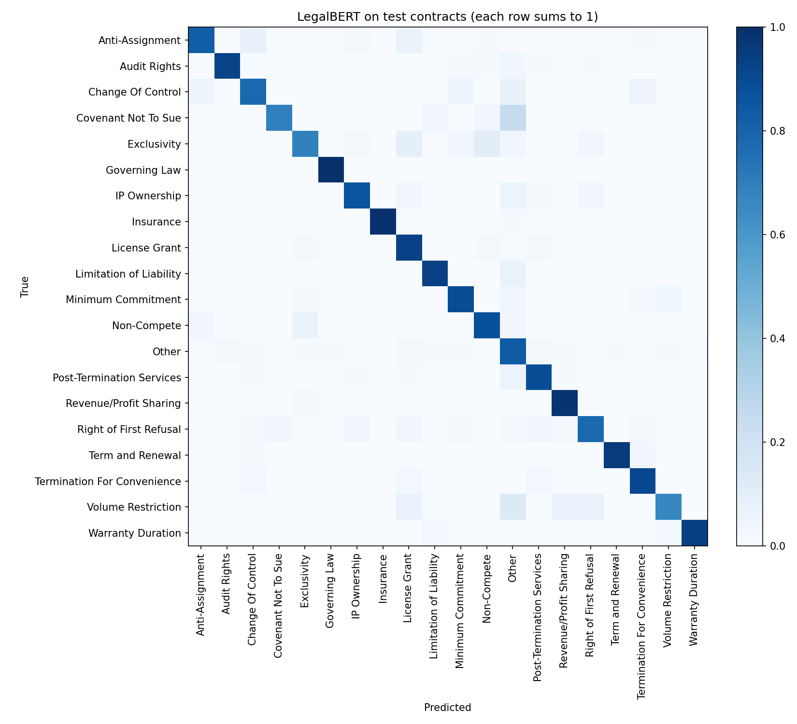

Legal Contract Auditor
Reads a contract, splits it into clauses and classifies each one into 19 clause types with a fine-tuned LegalBERT model, then flags risky wording.
88.4%
accuracy on held-out contracts
0.864
macro F1 (baseline 0.811)
76
test contracts never seen in training
- Built a dataset of 9,149 clauses from the lawyer annotations in CUAD (510 commercial contracts), with an "Other" class so the model can be run on whole contracts.
- Split the data by contract and removed text duplicated across splits, so the test score reflects contracts the model has never seen.
- Fine-tuned
legal-bert-base-uncasedon a Kaggle GPU and compared it with a TF-IDF + logistic regression baseline (81.8% accuracy). - My first version reported 96.8%, but its labels came from keyword rules that alone scored 95.8%. I rebuilt the labels from the real annotations; the README explains the change.
- Streamlit app: sample contract, text or PDF input, per-clause risk level, the words that drove each prediction, and CSV/PDF reports.
